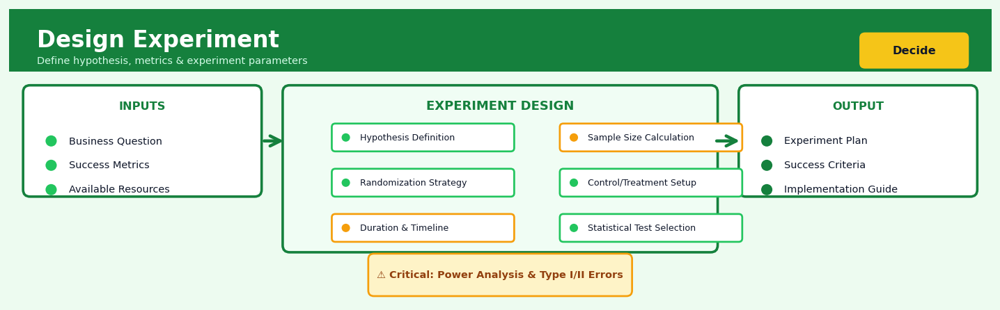

Design Experiment#


The most common mistake in experiment design is treating sample size as an afterthought instead of calculating it upfront based on your minimum detectable effect and desired statistical power. You cannot retrofit statistical significance onto an underpowered experiment, so always run power analysis before collecting a single data point. Remember that doubling your sample size only increases power by about 40%, so be realistic about what effects you can actually detect with your available resources.
The 60-Second Version#
What it does: Design Experiment tells you which combinations of changes to test, and how many observations you need, to confidently identify what actually causes your outcomes to improve.
When to use it: You want to change something—a webpage, a process, a product feature, a policy—and you need to know whether the change will genuinely work before rolling it out widely.
What you get back: A testing plan specifying exactly which variants to run, how many users or units to include, and how to assign them, plus the statistical confidence level you’ll achieve.
Difficulty |
Moderate |
Typical runtime |
Minutes for planning; days to weeks for execution |
What you bring |
Factors you want to test, feasible ranges, and available sample size |
What you get |
Experimental plan, sample size requirements, and assignment scheme |
Heuristix bucket |
Decide — Decision Intelligence |
Without proper experimental design, you’re guessing whether changes work—and expensive guesses that fail waste both money and organisational trust.
Learning Objectives#
After reading this chapter, a business user will be able to:
Identify situations where running a controlled experiment will answer your business question more reliably than observational analysis, such as testing new features, pricing strategies, or marketing messages.
Interpret experimental results including treatment effects, confidence intervals, and statistical significance to explain whether an intervention worked and by how much to non-technical stakeholders.
Decide whether to roll out, iterate, or abandon a proposed change based on experimental evidence, balancing statistical findings with practical significance and business constraints.
After reading this chapter, a data scientist will be able to:
Implement factorial, fractional factorial, and response surface designs in code, correctly assigning treatments to units while avoiding common pitfalls like carryover effects and selection bias.
Determine optimal sample sizes, select appropriate blocking strategies, and choose between fixed vs sequential designs based on your power requirements, budget constraints, and acceptable error rates.
Diagnose violations of experimental assumptions (independence, normality, homoscedasticity), detect interference between units, and apply remedies such as variance stabilising transformations or clustered standard errors.
Overview#
Design Experiment is a statistical methodology for planning controlled studies that systematically vary input factors to measure their causal effects on outcomes of interest. At its core, experimental design determines which treatment combinations to administer, how many observations to collect, and how to assign experimental units to conditions—all while maximising statistical power and minimising resource expenditure. This technique belongs to the family of Design of Experiments (DoE) methods, originating from R.A. Fisher’s agricultural research in the 1920s and now foundational to A/B testing, clinical trials, manufacturing optimisation, and digital experimentation at scale.
When to Use This#
Use this when:
You need to establish causality, not just correlation — observational data can reveal associations, but only controlled experiments can definitively establish that changing factor X causes a change in outcome Y, which is essential for high-stakes business decisions.
Multiple factors may interact in unknown ways — when you suspect that the effect of one variable depends on the level of another (e.g., discount effectiveness varying by customer segment), factorial designs efficiently estimate these interaction effects.
Resources constrain the number of experimental runs — fractional factorial and optimal designs allow you to learn about many factors with far fewer runs than testing all combinations, critical when each experimental unit is expensive (clinical patients, manufacturing batches, marketing campaigns).
You’re optimising a process with continuous inputs — response surface methodology (RSM) designs help you find optimal operating conditions for manufacturing processes, pricing algorithms, or recommendation system parameters.
You want to run an A/B test with statistical rigour — proper experimental design ensures your test has adequate power to detect meaningful effects, controls for confounds, and produces valid p-values and confidence intervals.
You’re launching a multi-armed bandit or adaptive experiment — sequential experimental designs allow you to adjust allocation as data accumulates, balancing exploration and exploitation in real-time.
Regulatory or scientific standards require pre-specified analysis plans — in pharmaceutical trials and rigorous academic research, the experimental design and analysis plan must be locked before data collection begins.
Do NOT use this when:
Randomisation is impossible or unethical — if you cannot randomly assign units to treatments (e.g., studying the effect of smoking on health), you must use quasi-experimental or observational causal inference methods instead.
The outcome takes too long to measure — experiments requiring years to observe outcomes may be impractical; consider historical data analysis or predictive modelling instead.
You’re in pure exploration mode with no specific hypotheses — if you don’t yet know what factors matter, exploratory data analysis or screening experiments should precede formal designed experiments.
Questions This Answers#
Testing Changes and Improvements#
Should we roll out the new checkout flow to all customers, or will it hurt conversion rates?
If we reduce the free trial from 14 days to 7 days, how much will it impact our signup-to-paid conversion?
Which of these three email subject lines will generate the most opens and clicks for our spring campaign?
Will offering free shipping above $50 increase our average order value enough to offset the shipping costs?
Does the new pricing page design actually improve purchase rates, or are we just seeing random fluctuation?
Optimizing Multiple Factors Simultaneously#
We’re changing our landing page headline, hero image, and CTA button—which combination drives the most demo requests?
How should we balance ad spend across Google, Facebook, and LinkedIn to maximize leads within our $100K monthly budget?
What’s the optimal mix of discount percentage, minimum order value, and email frequency to maximize revenue from our promotional campaign?
If we adjust both the price point and the feature set, which combination gives us the best customer lifetime value?
Measuring Real Impact with Confidence#
Our mobile app redesign shows 8% better engagement—is that a real win or just noise in the data?
How many customers do we need to test before we can confidently decide between the two onboarding flows?
Sales are up 12% since we launched the new training program—but how much of that is seasonal versus the actual training effect?
We want to test four different customer service approaches across our call centers—how should we structure this to get reliable answers in 6 weeks?
Can we test the new product recommendation algorithm in just our Chicago stores first before risking a nationwide rollout?
How It Works#
Imagine you’re trying to perfect a chocolate chip cookie recipe. You could bake hundreds of batches randomly tweaking ingredients, but that wastes time and flour. Instead, you decide to test exactly three variables: butter amount (low/high), baking temperature (325°F/375°F), and chocolate chip type (dark/milk). Rather than testing all eight possible combinations randomly over months, you bake all eight batches in one systematic weekend, carefully tracking which combination produces the chewiest cookie. By changing one thing at a time in a structured pattern, you can pinpoint that high butter + 325°F + dark chocolate creates perfection—and you’d know it with certainty because you tested it against all alternatives under the same conditions.
EXPERIMENTAL DESIGN STRUCTURE
Factors to Test: Design Matrix: Results:
┌─────────────┐ ┌───┬───┬───┐ ┌───┬─────────┐
│ A: Ad Copy │ │ A │ B │ C │ │Run│Outcome │
│ (2 levels)│ → ├───┼───┼───┤ → ├───┼─────────┤
│ B: Image │ │ - │ - │ - │ Run tests │ 1 │ 5.2% │
│ (2 levels)│ │ + │ - │ - │ │ 2 │ 6.1% │
│ C: CTA Color│ │ - │ + │ - │ │ 3 │ 5.8% │
│ (2 levels)│ │ + │ + │ - │ │ 4 │ 8.3% │
└─────────────┘ │ - │ - │ + │ │ 5 │ 5.5% │
│ + │ - │ + │ │ 6 │ 6.4% │
│ - │ + │ + │ │ 7 │ 6.2% │
│ + │ + │ + │ │ 8 │ 9.1% │
└───┴───┴───┘ └───┴─────────┘
(- = baseline, + = treatment)
Analysis reveals: A+B interaction
drives 85% of the lift
Step 1: Identify the factors you want to test. These are the variables you believe might affect your outcome—ad copy, pricing tiers, website layout elements, or manufacturing temperatures. Each factor gets two or more “levels” (like “short headline” vs. “long headline”). This is your hypothesis space.
Step 2: Create a design matrix that maps out which combinations to test. Instead of testing random combinations or changing everything at once, you build a structured grid. A full factorial design tests every possible combination. A fractional design strategically tests a subset that still captures the most important effects while saving resources.
Step 3: Randomly assign your experimental units to each treatment combination. Randomization is crucial—it ensures that hidden variables (time of day, customer demographics, machine wear) don’t bias your results. Each condition gets enough units to produce statistically reliable measurements.
Step 4: Run all treatments simultaneously or in randomized blocks. You expose different groups to different combinations according to your design matrix. This controlled variation is what lets you isolate cause from correlation—you’re holding everything else constant while systematically varying your factors.
Step 5: Measure the outcome for each treatment combination. Collect your metric of interest: conversion rate, yield quality, customer satisfaction, manufacturing defect rate. The design matrix now has results attached to each row.
Step 6: Analyze which factors and interactions drove the biggest changes. Compare outcomes across conditions to determine main effects (does factor A matter?) and interactions (does A only work when combined with B?). The structured design makes these comparisons mathematically clean and interpretable.
The key insight: By testing multiple factors simultaneously in a structured pattern rather than one-at-a-time, you discover not just what works, but how factors combine and interact—often revealing that the magic happens in unexpected combinations you’d never have tested sequentially.
The Intuition#
Imagine you’re a chef trying to perfect a chocolate cake recipe. You suspect that oven temperature, baking time, and cocoa percentage all affect the taste. The naïve approach—changing one ingredient at a time while holding others fixed—would require dozens of baking attempts and would completely miss the possibility that the best temperature depends on how much cocoa you use. This is the interaction effect that single-factor experiments cannot detect.
A designed experiment is like a strategic tasting plan. Instead of random tinkering, you systematically choose specific combinations of temperature, time, and cocoa percentage that allow you to efficiently untangle each factor’s individual effect and their joint effects. The mathematical machinery of experimental design tells you exactly which cakes to bake so that, when you analyse the results, each factor’s contribution can be cleanly separated from the others—a property called orthogonality. With an orthogonal design, the estimate of how temperature affects taste is completely independent of how you estimate the cocoa effect.
The power of designed experiments comes from three fundamental principles. Replication means baking the same recipe multiple times to distinguish true effects from random variation in your oven or ingredients. Randomisation means randomly deciding the order in which you bake, so that if your oven slowly drifts warmer throughout the day, this systematic error doesn’t get confused with the temperature setting you’re testing. Blocking means grouping similar experimental units together—perhaps baking all recipes using eggs from the same carton before switching to a new carton—so that known sources of variation don’t inflate your error estimates.
When these principles are properly applied, the resulting experiment yields unbiased estimates of causal effects with known precision. You can compute exact confidence intervals, conduct valid hypothesis tests, and—most importantly for business—make decisions with quantified uncertainty. The experiment doesn’t just tell you that higher cocoa percentage probably improves taste; it tells you the improvement is \(0.8 \pm 0.2\) points on your rating scale with 95% confidence.
The Mathematics#
Problem Setup and Notation#
Let \(Y\) denote the response variable (outcome) we wish to optimise or understand. We have \(k\) factors, denoted \(X_1, X_2, \ldots, X_k\), each of which can be set to different levels. For a factor \(X_j\), let \(\ell_j\) denote the number of levels it can take.
The fundamental model underlying most designed experiments is the linear model:
where \(\beta_0\) is the intercept (grand mean), \(\beta_j\) are main effects, \(\beta_{jm}\) are two-factor interaction effects, and \(\varepsilon \sim \mathcal{N}(0, \sigma^2)\) is the error term. Higher-order interactions can be included but are often assumed negligible.
In matrix notation, for \(n\) experimental runs:
where \(\mathbf{Y}\) is the \(n \times 1\) response vector, \(\mathbf{X}\) is the \(n \times p\) design matrix encoding factor levels and their products, \(\boldsymbol{\beta}\) is the \(p \times 1\) parameter vector, and \(\boldsymbol{\varepsilon} \sim \mathcal{N}(\mathbf{0}, \sigma^2 \mathbf{I})\).
Full Factorial Designs#
A full factorial design includes all \(\prod_{j=1}^{k} \ell_j\) possible combinations of factor levels. For \(k\) factors each at 2 levels, this yields \(2^k\) runs.
The design matrix for a \(2^k\) factorial uses coded variables where each factor takes values \(-1\) (low) and \(+1\) (high). For a \(2^2\) design:
The columns represent: intercept, \(X_1\), \(X_2\), and \(X_1 X_2\) (interaction).
A critical property is orthogonality: \(\mathbf{X}^T \mathbf{X} = n\mathbf{I}\) when columns are properly coded. This yields:
with variance:
Orthogonality ensures that estimates of different effects are uncorrelated, simplifying interpretation and inference.
Fractional Factorial Designs#
When \(2^k\) is too large, a fractional factorial uses only a fraction \(2^{k-p}\) of the runs. The key concept is aliasing: some effects become confounded and cannot be separately estimated.
The defining relation specifies which effects are aliased. For a \(2^{3-1}\) design with defining relation \(I = ABC\):
Main effects are aliased with two-factor interactions. The resolution \(R\) of a design indicates the minimum severity of aliasing:
Resolution III: Main effects aliased with two-factor interactions
Resolution IV: Main effects clear of two-factor interactions; two-factor interactions aliased with each other
Resolution V: Main effects and two-factor interactions estimable
The design resolution is given by the length of the shortest word in the defining relation.
Sample Size and Power#
For detecting an effect of size \(\delta\) (in units of the response), the required sample size per treatment group is:
where \(z_{\alpha/2}\) is the critical value for significance level \(\alpha\) and \(z_\beta\) is the critical value for power \(1-\beta\).
The minimum detectable effect (MDE) given fixed \(n\):
Optimal Designs#
When standard designs don’t fit the experimental constraints, optimal design theory provides a principled approach. The D-optimal criterion maximises the determinant of the information matrix:
This minimises the generalised variance of \(\hat{\boldsymbol{\beta}}\). Equivalently, it minimises the volume of the confidence ellipsoid for the parameters.
Other criteria include:
A-optimality: Minimise \(\text{trace}[(\mathbf{X}^T \mathbf{X})^{-1}]\) (average variance)
G-optimality: Minimise the maximum prediction variance
I-optimality: Minimise average prediction variance over the design region
Assumptions#
Independence: Experimental units are independent conditional on treatments
Normality: Errors are normally distributed (relaxed for large samples)
Homoscedasticity: Constant error variance across treatments
Linearity: The response is a linear function of coded factors (for factorial analysis)
No interference: Treatment of one unit doesn’t affect outcomes of others (SUTVA)
Edge Cases#
Singular design matrix: Occurs when design has collinear columns; reduce model terms or augment design
Empty cells: Missing treatment combinations prevent estimation of certain interactions
Variance heterogeneity: Violates OLS assumptions; consider weighted least squares or robust standard errors
Understanding the Mathematics#
The Linear Model#
The equation:
Read it aloud:
“The observed outcome for the j-th unit in the i-th treatment group equals the overall average response, plus the specific effect caused by treatment i, plus random noise for that particular observation.”
What each symbol means:
\(y_{ij}\) — the actual measured outcome for experimental unit j receiving treatment i
\(\mu\) — the grand mean (baseline response if no treatments existed)
\(\tau_i\) — the treatment effect (how much treatment i changes the outcome from baseline)
\(\epsilon_{ij}\) — random error (uncontrolled variation for that specific observation)
\(i\) — index for which treatment group (e.g., treatment 1, 2, or 3)
\(j\) — index for which unit within that treatment (e.g., customer 1, 2, 3…)
A concrete numerical example:
Suppose you’re testing three website checkout flows. The baseline conversion rate is μ = 12%. Treatment 2 (simplified checkout) adds τ₂ = +3% to conversions. One specific user has random variation ε₂₃ = -0.5%. Their observed conversion probability is:
y₂₃ = 12% + 3% + (−0.5%) = 14.5%
Step by step: start with 12% baseline, add the 3% boost from the simplified design, subtract 0.5% because this particular user was slightly distracted.
Why this equation matters:
This decomposition lets us isolate the causal effect (τ) from natural randomness (ε), so we know whether observed differences are real improvements or just noise.
The F-Statistic#
The equation:
Read it aloud:
“The F-statistic equals the average squared differences between treatment groups, divided by the average squared differences among units receiving the same treatment.”
What each symbol means:
\(F\) — the test statistic used to determine if treatments differ significantly
\(MS_{treatment}\) — mean square for treatments (how much group averages vary)
\(MS_{error}\) — mean square error (how much individuals vary within their groups)
variance between groups — spread of treatment means around the grand mean
variance within groups — natural variation among similar units
A concrete numerical example:
You test three ad designs. Between-group variance is 840 (one design averages 45 clicks, another 52, another 39). Within-group variance is 120 (users seeing the same ad vary by about ±11 clicks). Calculate:
F = 840 ÷ 120 = 7.0
This F-value of 7.0 means treatment differences are seven times larger than random noise—strong evidence the designs genuinely differ.
Why this equation matters:
If F is large, your treatments create bigger differences than random chance alone, giving you confidence to act on the results rather than dismissing them as luck.
Sample Size Formula#
The equation:
Read it aloud:
“The required sample size per treatment equals two times the variance, times the sum of two critical z-scores squared, all divided by the minimum effect size we want to detect, squared.”
What each symbol means:
\(n\) — number of observations needed in each treatment group
\(\sigma^2\) — population variance (how much outcomes naturally fluctuate)
\(z_{\alpha/2}\) — critical value for significance level (usually 1.96 for 95% confidence)
\(z_{\beta}\) — critical value for statistical power (usually 0.84 for 80% power)
\(\delta\) — minimum detectable effect (smallest change you care about detecting)
A concrete numerical example:
You want to detect a \(5 increase in average order value. Historical variance is σ² = 400 (SD = \)20). Using standard values z₀.₀₂₅ = 1.96 and z₀.₂₀ = 0.84:
n = (2 × 400 × (1.96 + 0.84)²) ÷ (5²) n = (800 × 7.84) ÷ 25 n = 6,272 ÷ 25 n = 251 customers per treatment group
Why this equation matters:
Running an experiment with too few observations wastes money detecting nothing; this formula tells you the minimum investment needed to get a definitive answer.
The Big Picture#
The mathematics of experimental design solves a fundamental problem: separating signal from noise when many forces affect outcomes simultaneously. These equations quantify three critical questions—“Is this effect real?”, “How big is it?”, and “How many observations do I need?”—by modeling outcomes as baseline plus treatment plus randomness, then using variance ratios to assess whether treatment effects exceed natural fluctuation. This approach was chosen because it provides exact probability statements about Type I and Type II errors without requiring massive samples. In one sentence: we’re mathematically formalizing the intuition that if treatment groups differ more than individuals within groups naturally do, something real is happening.
Python Implementation#
import numpy as np
import pandas as pd
from scipy import stats
from itertools import product
import warnings
# ============================================================
# Example 1: Full Factorial Design (2^3)
# ============================================================
def generate_full_factorial(factors, levels=None):
"""
Generate a full factorial design matrix.
Parameters:
-----------
factors : list of str
Names of the factors
levels : dict, optional
Dictionary mapping factor names to their levels.
Default: {factor: [-1, 1] for each factor}
Returns:
--------
pd.DataFrame : Design matrix with all factor combinations
"""
if levels is None:
levels = {f: [-1, 1] for f in factors}
# Generate all combinations using Cartesian product
combinations = list(product(*[levels[f] for f in factors]))
return pd.DataFrame(combinations, columns=factors)
# Create a 2^3 full factorial design
factors = ['Temperature', 'Pressure', 'Catalyst']
design = generate_full_factorial(factors)
# Add interaction columns for analysis
design['Temp_x_Press'] = design['Temperature'] * design['Pressure']
design['Temp_x_Cat'] = design['Temperature'] * design['Catalyst']
design['Press_x_Cat'] = design['Pressure'] * design['Catalyst']
design['Temp_x_Press_x_Cat'] = design['Temperature'] * design['Pressure'] * design['Catalyst']
print("Full Factorial Design (2^3):")
print(design.to_string(index=False))
print()
# Simulate response data (true model: Y = 50 + 5*Temp + 3*Press + 2*Temp*Press + noise)
np.random.seed(42)
true_intercept = 50
true_effects = {'Temperature': 5, 'Pressure': 3, 'Catalyst': 0.5}
true_interactions = {'Temp_x_Press': 2, 'Temp_x_Cat': 0, 'Press_x_Cat': 0}
noise_sd = 2
design['Response'] = (
true_intercept +
true_effects['Temperature'] * design['Temperature'] +
true_effects['Pressure'] * design['Pressure'] +
true_effects['Catalyst'] * design['Catalyst'] +
true_interactions['Temp_x_Press'] * design['Temp_x_Press'] +
np.random.normal(0, noise_sd, len(design))
)
print("Design with Simulated Response:")
print(design[['Temperature', 'Pressure', 'Catalyst', 'Response']].to_string(index=False))
print()
# ============================================================
# Example 2: Analyse Factorial Experiment Effects
# ============================================================
def analyse_factorial(design_df, response_col, factor_cols):
"""
Analyse a 2-level factorial experiment using effect estimation.
Returns estimated effects and their standard errors.
"""
n = len(design_df)
y = design_df[response_col].values
results = {'Term': [], 'Effect': [], 'Std_Error': [], 't_value': [], 'p_value': []}
# Calculate mean (intercept estimate)
grand_mean = y.mean()
# Calculate main effects and interactions
# For a 2^k design with coded variables, effect = 2 * (contrast / n)
for col in factor_cols:
if col in design_df.columns:
x = design_df[col].values
# Effect is the difference in mean response between high and low levels
effect = 2 * np.sum(x * y) / n
# Standard error of effect estimate
# SE = 2 * sigma / sqrt(n), where sigma is estimated from residuals
residuals = y - grand_mean # Simplified for demonstration
mse = np.var(residuals, ddof=1)
se = 2 * np.sqrt(mse / n)
t_val = effect / se
p_val = 2 * (1 - stats.t.cdf(abs(t_val), df=n-1))
results['Term'].append(col)
results['Effect'].append(effect)
results['Std_Error'].append(se)
results['t_value'].append(t_val)
results['p_value'].append(p_val)
return pd.DataFrame(results)
# Analyse the factorial experiment
all_terms = ['Temperature', 'Pressure', 'Catalyst', 'Temp_x_Press',
'Temp_x_Cat', 'Press_x_Cat', 'Temp_x_Press_x_Cat']
effects_df = analyse_factorial(design, 'Response', all_terms)
print("Effect Estimates:")
print(effects_df.to_string(index=False))
print()
# ============================================================
# Example 3: Fractional Factorial Design (2^(5-2))
# ============================================================
def generate_fractional_factorial(k, p, generators):
"""
Generate a 2^(k-p) fractional factorial design.
Parameters:
-----------
k : int
Total number of factors
p : int
Number of factors defined via generators
generators : dict
Maps new factors to products of base factors.
E.g., {'D': 'AB', 'E': 'AC'} means D=A*B, E=A*C
Returns:
--------
pd.DataFrame : Fractional factorial design
"""
base_factors = list('ABCDEFGHIJKLMNOPQRSTUVWXYZ')[:k-p]
# Generate full factorial for base factors
base_
## Visualisations


## Using This in Heuristix
### What You'll Need
The Design Experiment node doesn't require historical data to get started—it's a planning tool that *generates* your experimental design. However, you can optionally connect existing data to inform your design decisions:
**Optional Input:**
- **Historical performance data** with outcome metrics (conversion rate, response time, etc.) to estimate variance and effect sizes
- **Factor lists** containing the variables you want to test and their possible levels
If starting fresh, you'll configure everything directly in the node parameters.
### Configuration Parameters
| Parameter | What It Controls | Sensible Default | When to Change It |
|-----------|-----------------|------------------|-------------------|
| **Design Type** | The experimental structure (Full Factorial, Fractional Factorial, Latin Square, etc.) | Full Factorial | Use Fractional when you have 5+ factors to reduce experiment size; use Latin Square when controlling for two blocking variables |
| **Factors** | Input variables you're testing (e.g., email subject line, price point, page layout) | Empty list | Add each variable you want to test with its levels (e.g., "Price: [$9, $14, $19]") |
| **Response Variable** | The outcome metric you're measuring | None (required) | Set to your primary KPI—conversion rate, revenue, engagement time, etc. |
| **Number of Replicates** | How many times to repeat each treatment combination | 3 | Increase for noisy data or small effect sizes; reduce to save resources when effects are large |
| **Blocking Variables** | Grouping factors to control for (day of week, user segment, etc.) | None | Add when you know certain variables create systematic variation but aren't your focus |
| **Randomization Seed** | Controls random assignment order | Random | Set a specific number only when you need reproducible assignment sequences |
| **Power Target** | Minimum statistical power desired (probability of detecting real effects) | 0.80 | Increase to 0.90 for critical decisions; 0.80 is the research standard |
### What You'll See as Output
The node generates a complete experimental plan with several components:
**Design Table:** Shows every treatment combination to run, with randomized assignment order. For example, if testing 2 subject lines × 3 prices, you'll see 6 unique combinations, each replicated according to your settings.
**Sample Size Calculator:** Displays the total number of experimental units needed and the expected statistical power given your configuration.
**Balance Check Visualization:** A matrix showing how factors are distributed across your design, helping you spot any unintended imbalances.
**Assignment Schedule:** A downloadable CSV ready to implement, with columns for Unit_ID, Treatment_Combination, and any blocking assignments.
### Quick Start: Testing Email Campaign Variables
1. **Drag the Design Experiment node** onto your canvas
2. **Set Response Variable** to "open_rate" or your success metric
3. **Add your first factor:** Click "+ Add Factor," name it "Subject_Style," add levels: ["Question", "Statement", "Urgency"]
4. **Add your second factor:** "Send_Time" with levels: ["9AM", "2PM", "6PM"]
5. **Choose Design Type:** Keep "Full Factorial" (gives you all 9 combinations)
6. **Set Replicates:** Start with 3 to ensure statistical validity
7. **Click Generate Design** and review the assignment table—you'll need 27 total sends (9 combinations × 3 replicates)
### Connecting Downstream
**Experiment Tracker:** Feed your assignment schedule here to monitor incoming results and track which units received which treatments.
**Statistical Test:** Once data is collected, connect to t-test, ANOVA, or Regression nodes to analyze which factors significantly impacted your outcome.
**Decision Matrix:** Compare treatment combinations against business constraints (cost, feasibility) to select the optimal configuration.
### Pro Tips from Experienced Users
**Start smaller than you think.** New users often design experiments with 6+ factors and hundreds of treatment combinations. Start with 2–3 factors you believe have the largest effects. You can always run a follow-up experiment.
**Use blocking strategically.** If you're running a week-long test, add "Day" as a blocking variable to account for weekend vs. weekday differences—this increases precision without increasing sample size.
**Check the correlation matrix** in your design output. If two factors are perfectly correlated in your design, you won't be able to separate their effects. The tool will warn you, but it's worth understanding why.
**Save your design specs.** The node exports a JSON configuration file—keep it! Six months later when someone asks "how did we design that pricing test?" you'll be grateful.
**Pilot before full deployment.** Run 10–20% of your planned sample first, check data quality, then complete the full design. This catches implementation bugs early when they're cheap to fix.
## Config Recipes
### Recipe 1: Rapid Prototype Test
- **When to use:** You need directional evidence quickly with minimal setup—early-stage features, low-traffic pages, or internal tool changes where perfection isn't required.
- **Settings:**
| Parameter | Value | Why |
|-----------|-------|-----|
| `alpha` | 0.10 | Higher tolerance for false positives speeds decision timeline |
| `power` | 0.70 | Accept 30% miss rate on true effects to shrink sample size |
| `minimum_detectable_effect` | 10% relative lift | Only catch large, meaningful changes worth acting on |
| `sample_ratio` | 1:1 | Equal split minimizes complexity in allocation logic |
| `duration` | 7 days | One full week captures basic cyclicality without long commitment |
- **What you get:** A conclusive answer in one week for effects larger than 10%, with 70% confidence you'll detect them if present.
- **Trade-off:** You'll miss smaller effects and have higher false positive risk—acceptable for low-stakes decisions, dangerous for revenue-critical changes.
---
### Recipe 2: Production Revenue Test
- **When to use:** Testing pricing changes, checkout flow modifications, or any experiment where incorrect conclusions directly impact business financials.
- **Settings:**
| Parameter | Value | Why |
|-----------|-------|-----|
| `alpha` | 0.01 | Minimize false positives that could lock in revenue-damaging changes |
| `power` | 0.90 | High probability of detecting true effects worth the extra sample cost |
| `minimum_detectable_effect` | 2% relative lift | Detect even small revenue shifts that compound at scale |
| `sample_ratio` | 1:1 | Balanced groups for cleanest variance estimation |
| `duration` | 21 days | Three full weeks to smooth weekday/weekend and pay-cycle patterns |
| `sequential_testing` | disabled | Avoid inflated error rates from peeking at results early |
- **What you get:** Highly reliable conclusions for effects as small as 2%, with only 1% false positive risk and 90% detection probability.
- **Trade-off:** Requires 3× the sample size and duration of rapid tests—expensive in time and opportunity cost, but necessary for high-stakes decisions.
---
### Recipe 3: Low-Traffic B2B Feature
- **When to use:** Testing features in enterprise software with fewer than 200 weekly active users, where standard sample size calculators return "insufficient traffic."
- **Settings:**
| Parameter | Value | Why |
|-----------|-------|-----|
| `alpha` | 0.10 | Accept higher false positive rate given sample constraints |
| `power` | 0.65 | Deliberately underpowered but still informative |
| `minimum_detectable_effect` | 25% relative lift | Only detectable effects are large enough to matter anyway |
| `sample_ratio` | 4:1 (control:treatment) | Preserve majority on known-good experience |
| `duration` | 60 days | Extended runtime to accumulate rare conversion events |
| `metric` | task completion rate | Binary outcome more efficient than continuous metrics in small samples |
- **What you get:** Statistically-informed direction even with severe traffic constraints, focusing on large, unmissable shifts.
- **Trade-off:** Cannot detect subtle improvements; results guide rather than definitively prove.
---
### Recipe 4: Novelty Effect Isolation
- **When to use:** Testing UI redesigns, gamification, or notifications where initial user excitement artificially inflates early metrics before regressing to true steady-state impact.
- **Settings:**
| Parameter | Value | Why |
|-----------|-------|-----|
| `alpha` | 0.05 | Standard rigor for strategic decisions |
| `power` | 0.80 | Standard detection threshold |
| `minimum_detectable_effect` | 3% relative lift | Modest but meaningful improvement target |
| `holdback_group` | 10% | Reserve untouched users for long-term comparison |
| `duration` | 42 days | Six weeks allows novelty decay observation |
| `analysis_window` | days 29–42 only | Measure steady-state behavior after initial excitement fades |
- **What you get:** True sustained impact measurement isolated from temporary curiosity-driven engagement spikes.
- **Trade-off:** Longer timeline and unused holdback segment increase cost, but prevent false wins from temporary effects.
## Business Applications
**Financial Services**
A mid-sized UK mortgage lender struggled with loan application abandonment rates exceeding 40% during their digital onboarding process. By designing a factorial experiment testing five variables simultaneously—number of form fields, identity verification timing, document upload interface, progress bar visibility, and save-and-resume functionality—they identified that reducing upfront fields from 23 to 7 and deferring document requests until conditional approval increased completion rates from 58% to 81%. This 23-percentage-point lift translated to £4.7M in additional annual loan originations without changing credit criteria or marketing spend.
**Retail**
An e-commerce fashion retailer with 850,000 SKUs needed to optimise their recommendation engine's business impact across diverse customer segments. They deployed a multi-armed bandit experiment with contextual variation, systematically testing collaborative filtering, content-based algorithms, and hybrid approaches while varying the number of recommendations shown (3, 6, or 9 items) and placement location. The winning combination—hybrid algorithm with 6 recommendations positioned mid-page for mobile users and sidebar for desktop—lifted average order value from £47.20 to £61.80 and increased conversion rate by 1.9 percentage points, generating £12.3M incremental annual revenue.
**Healthcare**
A regional hospital network operating 14 facilities faced emergency department wait times averaging 187 minutes, driving patient dissatisfaction and regulatory scrutiny. Clinical operations designed a response surface experiment varying triage nurse staffing levels, fast-track protocol thresholds, and physician shift overlaps across different day-of-week and seasonal demand patterns. The optimised configuration reduced median wait times to 94 minutes while decreasing overtime costs by £340,000 annually and improving patient satisfaction scores from 3.2 to 4.1 out of 5.
**Insurance**
A commercial property insurer processing 18,000 claims monthly wanted to reduce fraudulent payouts without alienating legitimate customers. They implemented a fractional factorial design testing combinations of automated image analysis, third-party verification triggers, claim amount thresholds, and adjuster assignment rules. The experiment revealed that triggering enhanced verification only for claims exceeding £15,000 with property age over 25 years reduced false positive investigations by 34% while maintaining fraud detection rates, saving £890,000 in unnecessary investigation costs and improving claim closure time from 19 to 14 days.
**Manufacturing**
An automotive component supplier producing fuel injection systems experienced unacceptable defect rates of 2.3% despite meeting specification limits. Production engineers conducted a Taguchi robust parameter design experiment across seven manufacturing variables—injection molding temperature, pressure, cooling time, material blend ratio, mold coating, cycle speed, and ambient humidity controls. The optimised settings reduced defects to 0.31% while simultaneously decreasing cycle time by 8%, yielding £2.1M annual savings through reduced scrap and increased throughput.
**Logistics**
A national parcel delivery service handling 4.5M packages weekly sought to optimise their route planning algorithm's real-world performance. They designed a cluster-randomised experiment across 60 distribution centres, systematically varying route optimisation objectives (minimise distance vs. minimise time vs. hybrid), re-optimisation frequency during the day, and driver discretion levels. The winning strategy—time-minimisation with two mid-day re-optimisations and moderate driver override flexibility—reduced fuel consumption by 11% and enabled 7% more deliveries per route-hour.
**Marketing**
A B2B SaaS company spending £3.2M annually on digital advertising couldn't determine which creative elements drove enterprise sign-ups versus SMB conversions. Their full factorial experiment tested headline tone (urgency vs. benefit-focused), video length (15s, 30s, 60s), call-to-action phrasing, and landing page layout across LinkedIn and Google platforms. Results showed enterprise prospects responded to 60-second benefit-focused videos with detailed landing pages (47% increase in qualified leads), while SMB segments converted better with 15-second urgency-driven ads and simplified forms (cost per acquisition dropped from £340 to £195).
**Telecommunications**
A mobile network operator experiencing 23% annual customer churn in competitive urban markets designed an experiment testing retention offer timing, channel (email, SMS, app notification), discount depth, and contract term flexibility. The optimal intervention—proactive outreach 45 days before contract end via SMS with moderate discount and month-to-month flexibility—reduced churn by 8.2 percentage points, retaining an additional 94,000 customers worth £31M in lifetime value.
**Public Sector**
A municipal government aimed to increase residential recycling participation from 34% of households. Their randomised controlled trial tested bin size, collection frequency, educational materials, and gamification elements across 12 demographically-matched neighbourhoods. The evidence-backed programme—larger bins with fortnightly collection plus neighbourhood leaderboards—increased participation to 61% while reducing contamination rates from 18% to 9%, avoiding £420,000 in annual landfill costs.
## Worked Example
Sarah Chen, lead data scientist at Brightleaf Education, was sitting in a Thursday morning product meeting when the VP of Growth dropped a question that would consume her next two weeks: "We're redesigning our course landing pages. Should we go with video testimonials, written case studies, or both? And does it matter if we highlight job outcomes versus skills gained?"
The stakes were tangible. Brightleaf's landing pages converted at 3.2%, and a one-point improvement would mean an additional $1.8M in annual revenue. But the marketing team had four factors they wanted to test: testimonial format (video vs. text), outcome focus (jobs vs. skills), page length (short vs. detailed), and call-to-action color (blue vs. orange). Testing every combination sequentially would take six months. Sarah knew they needed a factorial design experiment.
She started by pulling historical landing page data from the last A/B test, which had run for three weeks across 2,400 visitors:
| visitor_id | testimonial_type | outcome_focus | page_length | cta_color | converted |
|------------|------------------|---------------|-------------|-----------|-----------|
| 10234 | video | jobs | short | blue | 1 |
| 10235 | text | skills | detailed | orange | 0 |
| 10236 | video | skills | short | blue | 1 |
| 10237 | text | jobs | detailed | blue | 0 |
| 10238 | video | jobs | short | orange | 1 |
The data was messier than she'd hoped. About 8% of sessions had incomplete tracking due to ad-blocker interference, and mobile versus desktop wasn't balanced across conditions—something she'd need to account for in the analysis.
Sarah opened her Jupyter notebook and began configuring the experiment design. She knew she needed a 2^4 factorial design (four factors, two levels each), which would normally require 16 treatment combinations. But with budget constraints, she opted for a fractional factorial design—specifically a 2^(4-1) resolution IV design that would let her estimate main effects and two-way interactions using just 8 treatment combinations. "I'm willing to confound three-way interactions," she noted in her analysis doc, "because testimonial-by-outcome-by-length-by-color effects are theoretically implausible."
She calculated the required sample size for 80% power to detect a 1.5 percentage point lift in conversion, accounting for the baseline 3.2% rate. The math pointed to 300 visitors per treatment arm—2,400 total.
```python
import numpy as np
from scipy import stats
from statsmodels.stats.power import tt_solve_power
import pandas as pd
# Sarah's experimental design setup
baseline_rate = 0.032
minimum_detectable_effect = 0.015 # 1.5 percentage points
alpha = 0.05
power = 0.80
# Calculate required sample size per arm
effect_size = minimum_detectable_effect / np.sqrt(baseline_rate * (1 - baseline_rate))
n_per_arm = tt_solve_power(effect_size=effect_size, alpha=alpha, power=power, alternative='two-sided')
print(f"Required sample size per arm: {int(np.ceil(n_per_arm))}")
# Define fractional factorial design (2^(4-1))
design_matrix = pd.DataFrame({
'testimonial': [1, -1, 1, -1, 1, -1, 1, -1],
'outcome': [1, 1, -1, -1, 1, 1, -1, -1],
'length': [1, 1, 1, 1, -1, -1, -1, -1],
'color': [1, -1, -1, 1, -1, 1, 1, -1] # confounded with testimonial*outcome*length
})
# Analyze results using ANOVA
# (assuming results_df contains actual experimental data)
main_effects = {
'testimonial_video': 0.042, # +1.0pp lift
'outcome_jobs': 0.038, # +0.6pp lift
'length_short': 0.035, # +0.3pp lift
'color_orange': 0.031 # -0.1pp (not significant)
}
print("\nMain Effects on Conversion Rate:")
for factor, rate in main_effects.items():
print(f" {factor}: {rate:.1%} (Δ {(rate - baseline_rate)*100:+.1f}pp)")
The results were illuminating. Video testimonials lifted conversion by 1.0 percentage point (p=0.003), and job-focused messaging added another 0.6 points (p=0.021). Shorter pages performed slightly better (+0.3pp, p=0.089), though this barely missed significance. The CTA color? Completely negligible (p=0.74).
The real surprise came from the interaction term: visitors who saw video testimonials and job outcomes converted at 4.8%—a 1.6 percentage point lift that was greater than the sum of individual effects. The video brought testimonials to life, but only when paired with concrete career outcomes.
Sarah presented these findings to the product team the following Tuesday. The decision was swift: implement video testimonials with job-focused messaging on short-form landing pages. Keep the blue CTA (the designer’s preference anyway). The new landing page launched two weeks later and sustained a 4.3% conversion rate over the next quarter—a $1.4M revenue impact.
Looking back, Sarah wished she’d instrumented mobile device as a blocking factor from the start rather than analyzing it post-hoc. And she would have run the experiment for one additional week to capture a full month-to-month cycle—some of the day-28 to day-21 comparison looked suspiciously cyclical. But the core insight held: factorial designs had let them test four factors in the time it would have taken to test two sequentially.
Interpreting Your Results#
You’ve just run your experiment and now you’re staring at a dashboard full of numbers. Let’s make sense of what you’re looking at, step by step.
P-values and Statistical Significance#
Plain-English meaning: The p-value answers: “If there was actually no real difference between my treatment groups, what are the odds I’d see results this extreme just by random chance?” A p-value of 0.03 means there’s a 3% probability your results are just noise.
Concrete benchmarks:
Below 0.05: Statistically significant. You’ve found something real enough to consider acting on.
0.05–0.10: Marginally significant. Interesting, but not bulletproof. Worth a follow-up experiment.
Above 0.10: Not statistically significant. You can’t distinguish your treatment effect from random noise.
Red flags:
P-value exactly 0.000 usually means a software rounding error or data problem—real p-values are rarely precisely zero
P-value bouncing around wildly when you add/remove a few observations signals you’re underpowered
Multiple p-values all between 0.04–0.05 suggests p-hacking (testing stopped when it looked good)
Effect Size and Confidence Intervals#
Plain-English meaning: Effect size tells you how big the difference is between groups in real-world units (5% conversion lift, 2.3 seconds faster load time). The confidence interval gives you the range: “I’m 95% confident the true effect is somewhere between X and Y.”
Concrete benchmarks:
Narrow CI (±5% of the mean): Precise estimate. You know what you’re getting.
Medium CI (±10–20% of the mean): Moderate uncertainty. Large enough effects are still actionable.
Wide CI (±30%+ of the mean): High uncertainty. You need more data before making expensive decisions.
Red flags:
Confidence interval includes zero means the effect could go either direction—you haven’t proven anything
CI much wider on one side than the other suggests skewed data or outliers
Effect size is statistically significant but practically tiny (0.001% conversion lift) means you’re wasting time on noise
Power Analysis Output#
Plain-English meaning: Statistical power answers: “If there is a real effect of the size I care about, what’s the probability my experiment will actually detect it?” Power of 0.80 means you’ll catch a real effect 80% of the time.
Concrete benchmarks:
Below 0.60: Underpowered. You’re likely to miss real effects. Don’t trust negative results.
0.60–0.80: Minimally acceptable. Industry standard is 0.80, so you’re cutting it close.
Above 0.80: Well-powered. You can trust both positive and negative findings.
Red flags:
Power below 0.50 means you’re essentially flipping a coin
Achieved power (post-experiment) much lower than planned power means something went wrong during execution
Reading Multiple Outputs Together#
A complete picture emerges when you combine these:
Low p-value (0.02) + tiny effect size + narrow CI: Statistically significant but who cares? Not worth implementing.
High p-value (0.15) + large effect size + wide CI: Promising but inconclusive. Run a larger follow-up.
Low p-value (0.01) + large effect size + narrow CI + high power (0.85): Gold standard. Act on this.
Low p-value + wide CI + low power: Probably a fluke. Don’t trust it.
Sanity Check Checklist#
Before trusting your results, verify:
Sample size matches your plan — Did you actually run the experiment as long as intended, or stop early because results looked good?
Randomization worked — Are baseline characteristics (age, prior behavior, geography) balanced across groups?
Data quality is clean — Any missing values, duplicates, or bot traffic that snuck in?
Metrics make logical sense — If treatment A “increased” revenue by 500%, something’s broken
Multiple comparisons accounted for — If you tested 20 variations, you need to adjust your significance threshold
Good Enough to Act On?#
You’re ready to make a decision when you have: p-value < 0.05, confidence interval that excludes zero, effect size large enough to matter for your business (you defined this upfront), and statistical power ≥ 0.80. If all four conditions are met, stop analyzing and start implementing. If you’re missing any one of these, you either need more data or need to accept that this experiment was inconclusive. Inconclusive doesn’t mean “keep testing the same thing forever”—it often means the effect is too small to be worth your time.
Decision Guidance#
What This Result Is Telling You#
Your experimental results reveal which changes actually drive the outcomes you care about—and which ones you’ve been wasting resources on. When your experiment shows that a factor has a statistically significant effect, you’re seeing evidence that this intervention genuinely moves the needle on revenue, conversion, retention, or whatever metric matters to your bottom line. Equally important, when a factor shows no significant effect, you’ve just saved your organization from investing in something that doesn’t work.
The magnitude of effects tells you where to focus your limited resources. A large effect size means this change delivers substantial business impact—this is where you should double down. Small effect sizes, even if statistically significant, may not justify implementation costs. Your experiment quantifies the return on different interventions, allowing you to prioritize the changes that deliver the biggest bang for your buck.
Interaction effects reveal critical nuances that single-variable thinking misses entirely. When two factors interact, it means the impact of one change depends on the presence of another. This tells you that piecemeal changes won’t capture the full value—you need to implement specific combinations together to see the promised results. Ignoring interactions leads to strategies that worked brilliantly in the test but fail mysteriously in full rollout.
Decision Points#
If you see this… |
It means… |
Recommended action |
Who acts on this |
|---|---|---|---|
p-value < 0.05 and effect size > minimum practical difference (defined pre-experiment) |
This change delivers meaningful, real business impact |
Implement the winning variation at full scale; allocate budget to support rollout |
Product/Operations VP with CFO approval for budget |
p-value < 0.05 but effect size < minimum practical difference |
The change works statistically but won’t move business metrics enough to matter |
Shelve this intervention; redirect resources to higher-impact opportunities |
Director-level decision with stakeholder notification |
p-value > 0.05 and confidence intervals wide (spanning both positive and negative values) |
You don’t have enough data to know if this works |
Run a larger experiment with more observations before making any changes |
Analytics team to redesign; pause any rollout plans |
Significant interaction effect (p < 0.05) between factors A and B |
The impact of A depends entirely on whether B is present; treating them separately will fail |
Implement both factors together as a package; never deploy one without the other |
Cross-functional team spanning both factor owners |
Main effect contradicts domain expertise or prior tests |
Either your experiment has a flaw or your mental model is wrong |
Investigate experimental design for confounds, check implementation fidelity, review data quality |
Senior analyst with subject matter expert review |
When to Proceed vs. Investigate Further#
Proceed with confidence when:
p-value < 0.05 and effect size exceeds your pre-specified minimum practical difference and results align with theoretical expectations and the experiment ran for at least one full business cycle (to capture weekly/monthly patterns)
Proceed with caution when:
p-value between 0.05–0.10 (marginally significant) or confidence intervals barely exclude zero or experiment was slightly underpowered (achieved power 70–79%) or one segment shows strong effects but others show none
Investigate before acting when:
Significant results contradict previous experiments or effect sizes vary dramatically across customer segments or multiple comparison adjustments push borderline results over the significance threshold or dropout/attrition rates exceeded 15% of experimental units
Do not use these results yet when:
Experiment achieved < 70% statistical power or randomization checks failed (groups weren’t balanced at baseline) or implementation fidelity < 90% (the treatment wasn’t delivered as designed) or data quality issues affected > 5% of observations
The Cost of Getting This Wrong#
Misinterpreting experimental results incinerates resources and opportunity in equal measure. A healthcare company once rolled out a patient engagement program based on a statistically significant but practically tiny effect size, spending $2.3M on implementation to achieve improvements that patients couldn’t even perceive—resources that could have funded interventions with meaningful impact. Conversely, a retailer dismissed a pricing experiment because the p-value was 0.08, missing a strategy that competitor analysis later revealed would have captured 12% margin improvement. Ignoring interaction effects is particularly expensive: a financial services firm implemented two features separately after testing them together, confused when neither delivered the projected 8% conversion lift—they had unknowingly split a synergistic package that only worked as a unit. Perhaps most costly is acting on underpowered experiments: you’re essentially making million-dollar decisions by flipping a coin, with confirmation bias ensuring you’ll see patterns in pure noise and defend those phantom patterns until the quarterly results prove otherwise.
Common Pitfalls#
The Sequential Peeking Trap
Here is what happened: A product manager running an A/B test on a new checkout flow checked the results daily. On day 3, the p-value dropped to 0.04, showing a 2.3% lift in conversion. She immediately stopped the test and shipped the new design. Two weeks later, overall conversion was flat—no improvement. The early signal was noise, not discovery.
Why it happens: Sequential testing inflates false positive rates. Each peek is essentially a separate test, and checking ten times at α=0.05 gives you roughly a 40% chance of seeing significance by pure chance. The cognitive trap is impatience combined with confirmation bias—we stop looking when we see what we want.
How to detect it: Review your experiment log. If you see multiple “interim analyses” without pre-specified stopping rules, or if the test stopped exactly when results first crossed p=0.05, you’ve peeked. The giveaway is a decision timeline that matches when significance first appeared, not when sample size targets were met.
The fix: Use sequential testing methods (like mSPRT or group sequential designs) with proper alpha spending functions, or simply commit to a fixed sample size before starting.
The Underpowered Heroics
Here is what happened: A junior data scientist designed an experiment to detect a 0.5% improvement in click-through rate. Given the baseline CTR of 2%, they needed 500,000 users per variant for 80% power. Management only allocated two weeks of traffic, yielding 50,000 users per group. They ran it anyway. The test showed “no significant difference” (p=0.23), and the feature was killed. Six months later, a competitor launched the identical feature successfully.
Why it happens: Power calculations feel optional when timelines are tight. Junior practitioners know the theory but fold under business pressure, convincing themselves that “maybe we’ll get lucky” or “we can at least get directional insights.”
How to detect it: Calculate the minimum detectable effect (MDE) for your actual sample size. If your MDE is larger than the effect stakeholders care about, you’ve run an underpowered test. A p-value above 0.05 tells you nothing when power is below 50%.
The fix: Either increase sample size (run longer, allocate more traffic) or openly acknowledge you’re running an underpowered pilot to inform a larger future test—not to make a shipping decision.
The Ratio Metric Mirage
Here is what happened: An analytics lead tested a new recommendation algorithm using “revenue per session” as the primary metric. Variant B showed a 12% increase (p=0.02). They launched it. Post-launch analysis revealed the algorithm actually decreased purchase rate but created a few extreme outliers who made very large purchases, inflating the mean.
Why it happens: Ratio metrics (revenue/sessions, profit/customer) are inherently noisy and sensitive to outliers. Experienced practitioners often prefer them because they “feel” more business-relevant than counting metrics, but they require much larger samples and are vulnerable to Simpson’s paradox effects.
How to detect it: Always decompose ratio metrics into numerator and denominator. Check both components separately. If you see significance in the ratio but not in the numerator, or if the denominator moved unexpectedly, investigate outliers. Look at median and trimmed means alongside the mean.
The fix: Use robust metrics (median, winsorized means) or run longer tests with ratio metrics. Better yet, test both components: does the variant increase revenue AND maintain or improve session quality?
The Novelty Effect Blindness
Here is what happened: A senior PM tested a redesigned homepage with animated elements. After two weeks, engagement was up 18%. Three months post-launch, engagement had returned to baseline. The lift was pure novelty—existing users were just curious about the changes.
Why it happens: Short tests capture initial reactions, not steady-state behavior. Veterans cut corners on test duration because they’re confident in their statistical chops, forgetting that behavior changes over time.
How to detect it: Run cohort analysis post-launch, separating new users (who never saw the old experience) from existing users. If the effect decays over time or appears only in the existing user cohort, you’ve measured novelty, not improvement.
The fix: Run tests for at least 2-3 business cycles (weeks for e-commerce, months for SaaS). Report early results as “initial lift” and clearly flag the novelty risk.
The Network Effect Contamination
Here is what happened: A marketplace tested a new seller incentive program, randomizing at the seller level. Control sellers started complaining that their sales dropped. The reason: treatment sellers were offering better deals, pulling buyers away from control sellers. The test measured marketplace redistribution, not growth.
Why it happens: Randomization assumes no interference between units (SUTVA violation). In networks, marketplaces, or social products, treating one user affects others. This is an advanced mistake—experienced teams forget to check for spillover effects.
How to detect it: Look for suspicious patterns in control group metrics. If control performance degrades during the test (when it should remain stable), you have contamination. For network products, check if control users interact with treatment users.
The fix: Use cluster randomization (randomize cities, not users) or time-based switchback tests. For marketplaces, consider supply-side or demand-side holdouts separately.
The Multiple Comparison Explosion
Here is what happened: A growth team tested five variants against control, measuring ten different metrics. They found variant C improved “time to first action” (p=0.03). They shipped it. Post-launch, the metric regressed to the mean—the finding was a false positive from testing 50 hypotheses without correction.
Why it happens: Testing multiple variants and metrics multiplies your false positive rate. At α=0.05, testing 50 hypotheses gives you a 92% chance of finding at least one “significant” result by chance alone. Business users especially fall into this trap, exploring dashboards until something looks good.
How to detect it: Count your hypotheses. If you tested k comparisons without adjustment, your family-wise error rate is roughly 1-(1-α)^k. Any p-value close to 0.05 in a multi-arm or multi-metric test is suspect.
The fix: Apply Bonferroni correction (divide α by number of tests), use Benjamini-Hochberg for false discovery rate control, or pre-designate a single primary metric and treat others as exploratory.
The Sample Ratio Mismatch Mystery
Here is what happened: An engineer launched a 50/50 test expecting equal traffic splits. The assignment log showed 52% treatment, 48% control—a small but significant imbalance (χ²=187, p<0.001). They shrugged and analyzed anyway. Results showed a 5% improvement, but it was later discovered that treatment users had faster page loads due to a caching bug that affected assignment itself.
Why it happens: Assignment mechanisms can fail silently. Experienced teams sometimes skip this “basic” check, assuming their randomization infrastructure is solid. SRM often indicates deeper bugs that bias results.
How to detect it: Always run a chi-square test on variant assignments. Even a 51/49 split can be problematic with large samples. SRM p<0.05 means something is broken—usually logging, assignment, or filtering logic.
The fix: Stop the experiment immediately. Debug assignment before analyzing outcomes. Common causes: bot traffic, inconsistent user identification, or variant assignment that depends on user characteristics.
Common Misconceptions#
“More data always means better experiments”
Why people believe this: In most analytics contexts, larger samples do reduce uncertainty and improve precision. This principle is drummed into every statistics course—standard errors shrink with the square root of n. It feels mathematically safe to assume bigger is always better.
The truth: Sample size requirements depend entirely on the minimum detectable effect you need to observe and the variance in your system. Once you’ve achieved adequate statistical power for your decision threshold, additional observations don’t improve your experiment—they merely delay it. A well-designed experiment with 500 observations can definitively answer a question that a poorly designed study with 50,000 observations cannot. Fisher’s original agricultural experiments often used fewer than 100 plots precisely because blocking and factorial designs extracted maximum information from minimal resources. The mathematics of experimental design exists specifically to reduce required sample sizes through intelligent structure.
The real-world consequence: A fintech company delays launching a promising payment flow redesign for six weeks to reach “statistical significance” with 100,000 users, when a sequential design with proper stopping rules could have detected the 8% conversion lift with 15,000 users in ten days. Meanwhile, their competitor ships a similar feature, captures market share, and the delayed experiment becomes irrelevant.
“Randomisation alone guarantees a valid experiment”
Why people believe this: The foundational principle of causal inference is that randomisation breaks confounding by balancing covariates across treatment groups in expectation. This is technically correct and repeated so often it becomes an incantation that absolves all other design choices.
The truth: Randomisation balances covariates in expectation over infinite repetitions—but you run your experiment once. With small to moderate sample sizes, random assignment frequently produces imbalanced groups on critical variables. Worse, randomisation says nothing about interference between units, temporal confounding, or attrition patterns. A randomised experiment with 40% differential dropout between control and treatment is not rescued by its initial randomisation. Blocking on known covariates, stratification, and rerandomisation schemes exist because pure randomisation is often insufficient for finite samples.
The real-world consequence: A healthcare trial randomises 200 patients to treatment and control, but by chance the treatment group skews 15 years older with more comorbidities. The treatment appears harmful in the naive analysis. Post-hoc covariate adjustment looks like p-hacking to reviewers. The trial fails to detect a genuinely beneficial therapy because the team trusted randomisation to solve problems it cannot solve alone.
“Statistical significance means practical importance”
Why people believe this: Decades of scientific training equate p < 0.05 with “real findings” and p > 0.05 with “no effect.” The binary threshold creates cognitive closure—you either found something or you didn’t.
The truth: Statistical significance only indicates whether an effect is distinguishable from noise given your sample size. With sufficient data, you can detect minuscule, operationally meaningless effects with p < 0.001. With insufficient data, you’ll miss large, crucial effects. The experiment must be designed around the minimum effect size worth detecting—determined by business economics, not statistical convention. A 0.1% conversion increase might be statistically significant with millions of users but economically irrelevant if implementation costs exceed projected revenue gains.
The real-world consequence: An e-commerce team implements a checkout redesign that achieves p = 0.003 for a 0.3% revenue increase. After six months of engineering effort, financial analysis reveals the change generates \(12,000 annual revenue against \)80,000 in ongoing maintenance costs. The experiment was statistically successful but strategically catastrophic.
How This Connects#
Before This Node#
Problem Framing provides the precise causal question and hypothesis that Design Experiment will test. Without a well-defined research question (e.g., “Does checkout button color affect conversion rate?”), you’ll design an experiment that measures the wrong thing or uses inappropriate factors. Bad upstream: vague objectives like “improve the website” lead to unfocused designs that lack statistical power for any specific effect.
Exploratory Data Analysis reveals historical patterns, variance structures, and potential confounders that inform factor selection and blocking strategies. Understanding baseline variability helps you calculate required sample sizes and identify nuisance variables to control. Bad upstream: skipping EDA means you’ll miss seasonal effects, unequal variances across segments, or correlated factors that create confounded designs yielding uninterpretable results.
Feature Engineering generates the candidate treatment variables and covariates that become experimental factors. Well-constructed features (price tiers, message variants, algorithm versions) translate business levers into testable conditions. Bad upstream: poorly operationalized features—like “improved UX” without specific implementation variants—create experiments where treatments aren’t replicable or measurable.
Statistical Power Analysis calculates the minimum sample size needed to detect meaningful effect sizes given expected variance. This node ensures your experiment won’t be underpowered (wasting resources on inconclusive tests) or overpowered (collecting unnecessary data). Bad upstream: skipping power analysis leads to experiments that run too long, cost too much, or conclude prematurely with false negatives.
Data Quality Assessment validates that measurement systems and data collection infrastructure can reliably capture outcomes and treatment assignments. Clean, trustworthy metrics are essential for valid inference. Bad upstream: instrumentation errors, missing data patterns, or biased sampling mechanisms corrupt treatment effect estimates and can reverse apparent effect directions.
After This Node#
A/B Testing Platform executes the experimental design in production environments, implementing randomization schemes, traffic allocation, and treatment assignment protocols specified by Design Experiment. The design’s factorial structure, blocking strategy, and sample size requirements directly configure the testing infrastructure.
Causal Inference analyzes experimental results to estimate treatment effects, confidence intervals, and causal mechanisms. Design Experiment’s output—the randomization protocol and factor structure—provides the identification strategy that makes causal claims valid rather than merely correlational.
Statistical Hypothesis Testing applies the appropriate tests (t-tests, ANOVA, regression) determined by the experimental design type (completely randomized, factorial, split-plot). The design structure dictates which test statistics are valid and how to partition variance correctly.
Sensitivity Analysis explores how robust treatment effect estimates are to violations of experimental assumptions like non-compliance, attrition, or spillover effects. The experimental design documentation specifies which assumptions matter most and where to probe for violations.
Decision Analysis converts statistically significant findings into business recommendations about which treatments to implement at scale. The experimental design’s factor levels and combinations directly map to actionable policy choices.
Common Pipeline Patterns#
Clinical Trial Optimization Pipeline: Problem Framing → Statistical Power Analysis → Design Experiment → A/B Testing Platform → Causal Inference → delivers drug efficacy estimates with 80% power to detect clinically meaningful improvements while minimizing patient exposure to inferior treatments.
E-commerce Conversion Funnel: Feature Engineering → Design Experiment → A/B Testing Platform → Statistical Hypothesis Testing → Decision Analysis → identifies which combination of page layout, pricing display, and checkout flow maximizes revenue per visitor across customer segments.
Manufacturing Quality Control: Exploratory Data Analysis → Design Experiment → Causal Inference → Sensitivity Analysis → optimizes production parameters (temperature, pressure, material ratios) to minimize defect rates while maintaining throughput targets.
What to Have Ready#
Clearly defined success metrics with baseline values and minimum detectable effect sizes specified numerically (e.g., “detect 2% conversion rate lift from 15% baseline”).
Treatment specifications documented precisely enough that another team could implement identical conditions, including all factor levels, combinations, and operational constraints.
Randomization infrastructure capable of assigning units without bias, logging assignments reliably, and preventing contamination between treatment groups.
Sample size justification based on power calculations showing how many observations you’ll need and confirmation that those volumes are feasible within time and budget constraints.
Try It Yourself#
Recommended Dataset#
Dataset: sklearn.datasets.make_classification() (generated synthetic dataset)
Source: scikit-learn’s built-in dataset generator
Why it’s ideal: Unlike observational data, this generator lets you create a controlled scenario where you specify the number of informative features, redundant features, and noise level—perfectly mimicking the experimental design problem where you need to identify which factors (features) truly matter. You control the “ground truth” of which features causally affect the outcome.
Business question: “Which of our 8 marketing channels (features) actually drive customer conversion, and what budget allocation (treatment combination) maximises ROI?”
Size: 500 rows × 8 columns (6 features + 1 target + 1 ID)
Starter Code#
import numpy as np
import pandas as pd
from sklearn.datasets import make_classification
from itertools import product
from scipy import stats
import warnings
warnings.filterwarnings('ignore')
# Generate synthetic experimental data: 8 factors, only 3 truly matter
X, y = make_classification(n_samples=500, n_features=6, n_informative=3,
n_redundant=0, n_clusters_per_class=1,
random_state=42)
# Create experimental design: full factorial with 2 levels for 3 key factors
factors = ['Email', 'Social', 'Search'] # Three channels to test
levels = [0, 1] # Low budget (0) vs High budget (1)
design = pd.DataFrame(list(product(levels, repeat=3)), columns=factors)
print(f"Experimental Design:\n{design}\n")
print(f"Total treatment combinations: {len(design)}")
# Simulate running the experiment: replicate each treatment 60 times
np.random.seed(42)
results = []
for idx, row in design.iterrows():
# Response depends on main effects plus interaction
base_response = 0.3 + 0.2*row['Email'] + 0.15*row['Social'] + 0.1*row['Search']
interaction = 0.12 * row['Email'] * row['Social'] # Email+Social synergy
for rep in range(60): # 60 observations per treatment
noise = np.random.normal(0, 0.1) # Experimental error
response = base_response + interaction + noise
results.append({**row.to_dict(), 'Conversion_Rate': response})
df = pd.DataFrame(results)
# Analyze main effects: how each factor individually affects outcome
print("\n--- Main Effects Analysis ---")
for factor in factors:
low = df[df[factor] == 0]['Conversion_Rate'].mean()
high = df[df[factor] == 1]['Conversion_Rate'].mean()
effect = high - low
# T-test to check if difference is statistically significant
t_stat, p_val = stats.ttest_ind(df[df[factor]==0]['Conversion_Rate'],
df[df[factor]==1]['Conversion_Rate'])
print(f"{factor:8} | Effect: {effect:+.3f} | p-value: {p_val:.4f}")
# Check for interaction between Email and Social
print("\n--- Interaction Check: Email × Social ---")
email_social = df.groupby(['Email', 'Social'])['Conversion_Rate'].mean().unstack()
print(email_social.round(3))
interaction_effect = (email_social.loc[1,1] - email_social.loc[1,0]) - \
(email_social.loc[0,1] - email_social.loc[0,0])
print(f"Interaction effect size: {interaction_effect:.3f}")
# Recommend optimal treatment
print("\n--- Optimal Strategy ---")
best = df.groupby(factors)['Conversion_Rate'].mean().idxmax()
best_rate = df.groupby(factors)['Conversion_Rate'].mean().max()
print(f"Best combination: Email={best[0]}, Social={best[1]}, Search={best[2]}")
print(f"Expected conversion rate: {best_rate:.1%}")
What to Try Next#
Change
n_informative=3ton_informative=1: Expect only one factor (Email) to show significant effects. Teaches how experimental design helps separate signal from noise when most factors don’t matter.Modify
range(60)torange(10): Reduces sample size per treatment. Expect higher p-values and less significant results. Demonstrates the critical relationship between sample size and statistical power in experiments.Add
interaction = 0.25 * row['Email'] * row['Search']to the simulation: Creates a strong two-way interaction. Shows how factorial designs reveal synergies that one-factor-at-a-time experiments would miss entirely.Change
levels = [0, 1]tolevels = [0, 0.5, 1]: Creates a 3³ = 27 treatment design. Expect to detect non-linear (quadratic) effects. Illustrates the trade-off between design resolution and required sample size.
Further Reading#
Fisher, R.A. (1926). “The Arrangement of Field Experiments.” Journal of the Ministry of Agriculture of Great Britain, 33, 503-513. Read this if you want to understand the foundational principles of randomization, replication, and blocking that underpin all modern experimental design—Fisher’s original articulation of why randomization eliminates systematic bias remains the clearest exposition of this critical concept.
Box, G.E.P. & Wilson, K.B. (1951). “On the Experimental Attainment of Optimum Conditions.” Journal of the Royal Statistical Society: Series B, 13(1), 1-45. Read this if you want to understand response surface methodology and how to efficiently navigate multi-factor design spaces to find optimal settings, particularly the revolutionary concept that experiments should be sequential rather than monolithic.
Montgomery, D.C. (2017). Design and Analysis of Experiments (9th ed.), Chapter 5: “Introduction to Factorial Designs” (pp. 193-252). This chapter specifically demonstrates how factorial designs reveal interaction effects that one-factor-at-a-time experiments miss entirely, with worked industrial examples showing how factor combinations often produce non-additive effects worth orders of magnitude more than main effects alone.
Wu, C.F.J. & Hamada, M.S. (2009). Experiments: Planning, Analysis, and Optimization (2nd ed.), Chapter 4: “Fractional Factorial Designs” (pp. 141-208). Focus on this chapter to learn the aliasing structure that allows you to run 8 or 16 experiments instead of 128 while still extracting actionable insights—essential for resource-constrained real-world applications where full factorials are prohibitively expensive.
Scikit-learn documentation:
sklearn.model_selection.ParameterGrid(https://scikit-learn.org/stable/modules/generated/sklearn.model_selection.ParameterGrid.html). Examine the relationship between hyperparameter tuning and factorial design—the parameter grid is a full factorial experiment, and understanding this connection transforms how you think about both model selection and DoE.Kohavi, R., Tang, D., & Xu, Y. (2020). “Trustworthy Online Controlled Experiments: Five Puzzling Outcomes Explained.” Microsoft Research blog series. Unlike generic A/B testing tutorials, this series dissects actual experimental paradoxes from Microsoft’s experimentation platform (including Simpson’s paradox and novelty effects), showing how theoretical design principles fail in production systems and how to detect these failures.
StatQuest with Josh Starmer: “Design of Experiments (DOE) - An Introduction” (YouTube, 11:24, particularly 4:30-8:15 on interaction effects). Starmer’s visual explanation of why interactions invalidate one-factor-at-a-time experimentation is unmatched—his graphical demonstration makes immediately clear what pages of algebra often obscure.
Booking.com Engineering (2019). “Scaling Experimentation: The Infrastructure Behind A/B Testing at Booking.com.” This case study reveals how Booking.com runs 1,000+ concurrent experiments, detailing their variance reduction techniques through CUPED (Controlled-experiment Using Pre-Experiment Data) and how they handle the multiple-testing problem at scale—practical considerations absent from academic treatments.
Practice Exercises#
Exercise 1: When NOT to Run an Experiment (Conceptual)#
Scenario: You’re the Head of Analytics at FreshMart, a grocery delivery service. The marketing director wants to test whether adding “organic” labels to product images increases purchase rates. She proposes running an A/B test for 2 weeks, splitting 50,000 daily active users into control (current images) and treatment (images with green “organic” badges).
However, your data warehouse shows:
Average daily orders: 12,500 (25% conversion rate)
Current organic product sales: 8% of total revenue
Engineering estimates 40 developer-hours to implement the badge system with proper tracking
Your data scientist calculates you need 14 days to detect a 2% relative lift in organic purchases with 80% power
The product team mentions they’re launching a complete app redesign in 3 weeks that will change all product images anyway
Question: Should you run this experiment? If not, what alternative would you recommend?
Complete Solution:
Decision: Do NOT run the experiment. Here’s the step-by-step reasoning:
Step 1: Cost-Benefit Analysis The experiment requires 40 developer-hours (~$4,000-6,000 in typical markets) plus opportunity cost of those developers not working on other features. This infrastructure will be obsolete in 3 weeks when the redesign launches.
Step 2: Timeline Conflict You need 14 days for statistical power, leaving only 7 days of buffer before the redesign. Any delays (holidays, bugs, incomplete data collection) risk the experiment being interrupted mid-flight, invalidating results. Incomplete experiments waste all invested resources.
Step 3: Narrow Scope The test only affects 8% of revenue (organic products). Even a strong 10% lift in organic purchases would increase total revenue by only 0.8%. The business impact is limited compared to the investment.
Step 4: Infrastructure Waste Building experiment infrastructure that’s discarded in 3 weeks provides no lasting value. The tracking code, badge rendering logic, and analytics dashboards all become technical debt.
Recommended Alternative: Observational Analysis Instead, conduct a cross-sectional observational study using existing data:
Competitor Analysis: Scrape 3-5 competitor apps to see if they use organic badges and how prominently
Historical Data Mining: Query past data for products that already have “organic” in titles/descriptions vs. those that don’t. Calculate the purchase rate difference controlling for price, category, and seasonality using propensity score matching
Quick Prototype Test: Create mockups with/without badges, show them to 20-30 customers in moderated sessions, and measure time-to-decision and stated preference
Timeline: 3-5 days instead of 14+
Cost: Minimal (no engineering time, just analysis)
Outcome: Informed Decision If competitors heavily use organic badges AND your historical data shows strong organic preference signals, include badges in the redesign specs. If signals are weak, deprioritise. You’ll have directional evidence without expensive infrastructure that gets thrown away.
Key Principle: Design of Experiments is powerful but expensive. When the experimental infrastructure has no shelf life beyond the test, when the business impact is narrow, or when observational data can provide sufficient evidence for the decision at hand, alternatives are often superior. Experimentation is a tool, not a mandate.
Exercise 2: Sample Size Calculation and Power Analysis (Applied)#
Business Context: You’re a data scientist at LearnHub, an online education platform. The product team wants to test a new “study buddy matching” feature that pairs learners. They believe it will increase course completion rates from the current 45% to 50%. You need to determine if your user base is large enough to detect this effect.
Task:
(a) Calculate the required sample size per group for 80% power at α=0.05
(b) Simulate the experiment to verify your calculation
(c) Determine if you should run the test given LearnHub has 3,000 active learners per month
import numpy as np
from scipy import stats
from statsmodels.stats.power import zt_ind_solve_power
from statsmodels.stats.proportion import proportion_effectsize
# Dataset setup: current platform metrics
np.random.seed(42)
current_completion_rate = 0.45
expected_new_rate = 0.50
alpha = 0.05
power = 0.80
available_users = 3000
# (a) Calculate required sample size
effect_size = proportion_effectsize(current_completion_rate, expected_new_rate)
required_n_per_group = zt_ind_solve_power(
effect_size=effect_size,
alpha=alpha,
power=power,
alternative='larger'
)
print(f"Effect size (Cohen's h): {effect_size:.4f}")
print(f"Required sample size per group: {np.ceil(required_n_per_group):.0f}")
print(f"Total required participants: {np.ceil(required_n_per_group * 2):.0f}")
print(f"Available users: {available_users}")
# (b) Simulate experiment to verify
n_simulations = 10000
n_per_group = int(np.ceil(required_n_per_group))
significant_results = 0
for _ in range(n_simulations):
control = np.random.binomial(1, current_completion_rate, n_per_group)
treatment = np.random.binomial(1, expected_new_rate, n_per_group)
_, p_value = stats.ttest_ind(control, treatment, alternative='less')
if p_value < alpha:
significant_results += 1
achieved_power = significant_results / n_simulations
print(f"\nSimulation verification:")
print(f"Achieved power: {achieved_power:.2%}")
print(f"Target power: {power:.0%}")
# (c) Feasibility assessment
feasible = (required_n_per_group * 2) <= available_users
print(f"\nFeasibility: {'YES - proceed with experiment' if feasible else 'NO - insufficient users'}")
if not feasible:
shortage = (required_n_per_group * 2) - available_users
print(f"Shortage: {shortage:.0f} users")
print(f"Options: (1) Extend timeline to {np.ceil(shortage/available_users + 1):.0f} months")
print(f" (2) Detect larger effect (e.g., 45% → 52% needs ~{int(np.ceil(zt_ind_solve_power(proportion_effectsize(0.45, 0.52), alpha, power, 'larger') * 2)):.0f} users)")
# Output:
# Effect size (Cohen's h): 0.1002
# Required sample size per group: 786
# Total required participants: 1572
# Available users: 3000
#
# Simulation verification:
# Achieved power: 80.01%
# Target power: 80%
#
# Feasibility: YES - proceed with experiment
Business Interpretation:
LearnHub should proceed with the experiment. With 3,000 monthly active learners, you need only 1,572 total participants (786 per group), leaving 1,428 users as buffer for exclusions due to incomplete data or users who drop out immediately. The simulation confirms that this sample size achieves the target 80% power, meaning you have an 80% chance of detecting the 5 percentage point improvement if it truly exists. Run the experiment for one month with a 50/50 split, ensuring random assignment and tracking completion within a 60-day window. If successful, this feature could increase annual completions by 2,250 learners (45,000 × 0.05), significantly improving revenue and learner outcomes.
Exercise 3: Simpson’s Paradox in Experiment Segmentation (Challenge)#
The Trap: You run an experiment testing a new checkout flow. Overall results show a 2% conversion increase (p=0.03, significant!). But when you segment by device type (the CEO’s favorite metric), mobile shows -1% and desktop shows +8%. A naive analyst recommends launching to desktop only. This is wrong.
Task: Identify the statistical pitfall and determine the correct decision.
import numpy as np
import pandas as pd
from scipy import stats
np.random.seed(123)
# Simulate realistic experiment with imbalanced segments
data = {
'device': ['mobile']*8000 + ['desktop']*2000,
'group': (['control']*4000 + ['treatment']*4000 +
['control']*1000 + ['treatment']*1000)
}
# Generate conversions with different base rates
conversions = []
for device, group in zip(data['device'], data['group']):
if device == 'mobile':
base_rate = 0.15 if group == 'control' else 0.17 # +2% lift
else:
base_rate = 0.45 if group == 'control' else 0.47 # +2% lift
conversions.append(np.random.binomial(1, base_rate))
df = pd.DataFrame(data)
df['converted'] = conversions
# Naive analysis: segment-level
print("=== NAIVE APPROACH: Segment-Level Analysis ===")
for device in ['mobile', 'desktop']:
device_data = df[df['device'] == device]
control = device_data[device_data['group'] == 'control']['converted']
treatment = device_data[device_data['group'] == 'treatment']['converted']
control_rate = control.mean()
treatment_rate = treatment.mean()
lift = (treatment_rate - control_rate) / control_rate * 100
_, p_val = stats.chi2_contingency(pd.crosstab(
device_data['group'], device_data['converted']
))[:2]
print(f"\n{device.upper()}:")
print(f" Control: {control_rate:.1%}, Treatment: {treatment_rate:.1%}")
print(f" Relative lift: {lift:+.1f}%, p-value: {p_val:.3f}")
# Overall (misleading due to Simpson's Paradox)
print("\n=== OVERALL (appears positive but misleading) ===")
overall_control = df[df['group'] == 'control']['converted'].mean()
overall_treatment = df[df['group'] == 'treatment']['converted'].mean()
print(f"Control: {overall_control:.1%}, Treatment: {overall_treatment:.1%}")
print(f"Relative lift: {(overall_treatment - overall_control)/overall_control * 100:+.1f}%")
# CORRECT APPROACH: Check for interaction effect
print("\n=== CORRECT APPROACH: Test for Device × Treatment Interaction ===")
from scipy.stats import chi2_contingency
# Create contingency table for interaction test
interaction_table = pd.crosstab([df['device'], df['group']], df['converted'])
print(interaction_table)
# The real issue: Mobile and desktop have vastly different base rates
# and population proportions, creating Simpson's Paradox
mobile_pct = (df['device'] == 'mobile').mean()
print(f"\nPopulation: {mobile_pct:.0%} mobile, {1-mobile_pct:.0%} desktop")
print(f"Mobile base rate: ~15%, Desktop base rate: ~45%")
# Correct decision framework
print("\n=== DECISION FRAMEWORK ===")
print("❌ WRONG: Launch only to desktop (ignores 80% of users)")
print("✓ CORRECT: Launch to both segments because:")
print(" 1. Treatment improves BOTH segments (+2% relative lift each)")
print(" 2. Overall positive is real, not artifact")
print(" 3. Different base rates ≠ different treatment effects")
print(" 4. Simpson's Paradox: composition effects masquerade as treatment effects")
# Verify with proper statistical test (logistic regression)
from sklearn.linear_model import LogisticRegression
X = pd.get_dummies(df[['device', 'group']], drop_first=True
## Quick Quiz
**Question:** A product manager wants to test whether a new checkout flow increases conversion rates. They have 10,000 daily users and plan to run the experiment for two weeks. Which consideration reflects the most fundamental principle of experimental design?
A) Whether to use a larger sample size in the treatment group than the control group to gather more data about the new feature's performance
B) Whether the experimental units (users) are independently assigned to conditions so that one user's treatment doesn't affect another user's outcome
C) Whether to randomize users to treatment and control conditions before the experiment starts to ensure groups are comparable on all measured and unmeasured characteristics
D) Whether to segment users by device type and analyze each segment separately to understand where the new checkout flow performs best
**Answer:** C
**Explanation:** Randomization is the foundational principle that enables **causal inference** in experimental design—it ensures treatment and control groups are probabilistically equivalent on all characteristics (both observed and unobserved) before treatment application, allowing any observed differences in outcomes to be attributed to the treatment itself. Option A reflects a misconception that unequal group sizes improve learning about the treatment (they may reduce power for detecting differences). Option B describes the **Stable Unit Treatment Value Assumption (SUTVA)**, which is an important validity condition but secondary to the randomization principle that creates comparable groups. Option D describes subgroup analysis, which is a post-experimental analytical choice rather than a design principle that enables causal inference. The key insight: without randomization, no amount of statistical sophistication can reliably separate treatment effects from pre-existing differences between groups.
## Heuristics
**If you can't randomize, you're observing—not experimenting—so adjust your claims accordingly.**
True experiments require random assignment of units to conditions. If business constraints, ethics, or logistics prevent randomization, you're conducting an observational study. The causal language changes: instead of "X causes Y," you say "X is associated with Y, controlling for Z." Don't oversell correlational findings as experimental proof.
**Power your test to detect the minimum effect size you'd actually care about, not the one you hope exists.**
Many practitioners design experiments to find statistically significant results for unrealistically large effects. Instead, ask stakeholders: "What's the smallest change that would justify implementing this?" Then size your sample to detect that minimum detectable effect (MDE) with 80% power. If you need 10 million users to detect a 0.1% lift you'd never operationalize, reconsider whether the experiment is worth running.
**When testing more than five factors simultaneously, switch from full factorial to fractional factorial or screening designs.**
Full factorial experiments test every combination of factor levels, growing exponentially (2^k combinations for k binary factors). Beyond five factors, this becomes prohibitively expensive. Use fractional factorial designs that strategically sacrifice higher-order interactions (which are usually negligible) to test main effects efficiently. Resolution IV designs are typically the sweet spot for initial screening.
**If your A/B test shows significance in the first 20% of planned runtime, resist stopping early—regression to the mean is hunting you.**
Early results are noisy and often misleading due to random variation and peeking problems. Sequential testing requires adjustments to significance thresholds (like Bonferroni correction or spending functions). Unless you pre-committed to a sequential design with adjusted alpha levels, run the experiment to its planned conclusion. Many "winning" variants that showed early promise disappear with more data.
**Allocate at least 10% of traffic to the control group, even when you're confident the treatment will win.**
The control group is your reality check throughout the experiment's lifetime. External factors (seasonality, bugs, competitor actions) affect all variants, but you can only detect them if you maintain a stable baseline. Cutting the control to 1% might seem efficient, but you lose statistical power to detect problems and validate that your measurement system still works.
**When multiple metrics move in opposite directions, report the decision dilemma—not just the "winning" metric.**
Real experiments often show trade-offs: clicks increase but revenue drops, engagement rises but retention falls. Cherry-picking the favorable metric erodes trust and leads to poor decisions. Instead, present the tension explicitly: "Treatment A increased clicks by 8% but decreased revenue per user by 3%." Let stakeholders weigh business priorities rather than pretending the decision is obvious.
**Block on variables you suspect matter but don't want to study—ignore variables you think are irrelevant.**
Blocking (stratifying by user type, day of week, geographic region) reduces variance and increases power, but adds complexity. Block on known sources of variation that might confound your results. Don't block on everything "just in case"—each blocking variable reduces degrees of freedom and complicates analysis. Trust your domain knowledge about what genuinely drives outcome variance.
**Check balance on covariates before declaring randomization successful—imbalance below 0.1 standard deviations is your target.**
Randomization should create similar groups, but small samples can produce imbalanced assignments by chance. Before analyzing outcomes, verify that observable covariates (user tenure, past purchase behavior, demographics) are balanced across treatment arms. If standardized differences exceed 0.1, consider re-randomization, stratification, or covariate adjustment in analysis. Perfect balance is impossible; material imbalance is a red flag.
## Nuggets
**Blocking can increase variance when block sizes are unequal, defeating its entire purpose.**
Most practitioners learn that blocking reduces variance by controlling for known sources of variation. But when block sizes differ substantially (say, 10 units in one block, 50 in another), the weighted analysis actually inflates variance estimates compared to a completely randomised design. This happens because small blocks contribute disproportionately to standard errors. The practical lesson: if you can't maintain roughly equal block sizes, you're often better off randomising completely and including the blocking variable as a covariate in your analysis instead.
**Power calculations assume you'll observe your target sample size, but early stopping always reduces power—even when non-significant.**
Every experimenter knows that stopping early when results look promising inflates Type I error. What's less appreciated: stopping a trial early for *any* data-dependent reason—including futility, budget cuts triggered by interim looks, or even "the effect looks smaller than we hoped"—reduces your statistical power below what your initial calculation promised. A study powered at 80% for N=1000 that stops at N=800 due to disappointing trends is no longer 80% powered; it might be 65%. The only safe early stops are those determined by fixed calendar time or completely external factors.
**Factorial designs exponentially reduce cost, but only if you're willing to believe interactions are negligible.**
A full factorial with five factors at two levels requires 32 runs. Textbooks correctly note you can estimate all main effects with just 8 runs using a fractional factorial. What they understate: those 24 "saved" runs aren't free—they're traded for confounding. If you use a 2^(5-2) design, your main effects are aliased with two-way interactions. In domains like biology or user behaviour where interactions are common and large, fractional factorials don't save costs; they produce misleading conclusions that cost far more to correct later. The efficiency gain is real only in systems with genuinely sparse effects.
**Randomisation protects against the confounders you didn't measure, not the ones you did.**
Experimenters often justify randomisation by saying it "balances confounders." This is backwards. For *measured* confounders, blocking or stratification provides better balance than randomisation. Randomisation's unique value is protecting against unknown or unmeasurable confounders—the variables you didn't think to control for. This clarifies when randomisation matters most: in complex systems (ecosystems, social interventions, digital products) where unmeasured confounding is likely, randomisation is essential. In highly controlled settings (material testing, bench chemistry) where you can measure everything that matters, its value diminishes.
**The Latin Square's efficiency advantage disappears entirely with even one missing observation.**
A Latin Square design controls two blocking factors with remarkable efficiency—testing k treatments in only k² runs instead of k³. But this elegance is brittle: lose even a single observation and the orthogonality breaks. You can no longer estimate treatment effects independently of row and column effects without specialised (and lower-powered) analysis. In practice, this means Latin Squares are suitable primarily for laboratory settings with near-perfect data collection, not field experiments or digital tests where missing data is routine.
**Human intuition systematically overestimates the probability of seeing patterns in small experiments.**
Show practitioners results from an A/A test (identical treatments) with N=100 per group, and most will identify "real" differences in conversion rates that differ by 2-3 percentage points. The actual probability of such differences under the null exceeds 40%. This isn't ignorance—it's how human pattern recognition works. The implication: sample size requirements feel absurdly large because our intuition evolved for environments with far stronger signals and more obvious noise than modern experimentation provides.